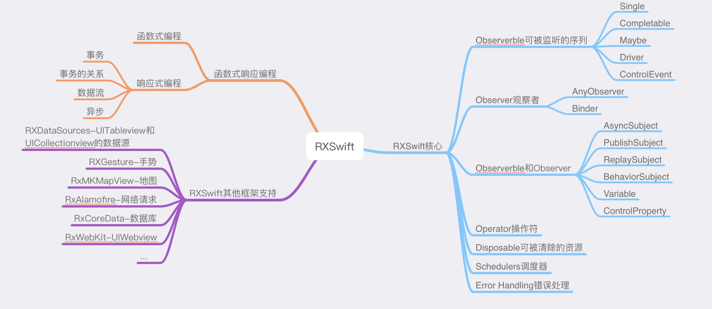
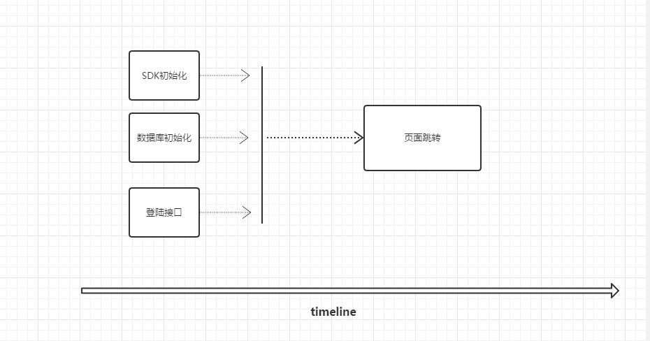

RXSwift函数响应式编程的讲解以及实现方式

函数式编程
函数式编程是种编程范式。它是通过构建函数操作数据序列，然后对这些序列做出响应的编程方式，它需要我们将函数作为参数传递，或者作为返回值返回。我们可以通过组合不同的函数来得到想要的结果。 一种构建计算机程序结构和元素的方式 - 将计算视为数学函数的评估并避免改变状态和可变数据。
它是一种声明性编程范例，这意味着使用表达式或声明而不是语句来完成编程。在函数代码中，函数的输出值仅取决于传递给函数的参数，因此，对于参数x，使用相同的值调用函数f两次会产生相同的结果f（x）;这与依赖于本地或全局状态的过程形成对比，当使用相同的参数但使用不同的程序状态调用时，这可能在不同的时间产生不同的结果。消除副作用，即不依赖于函数输入的状态变化，可以使得更容易理解和预测程序的行为，这是开发函数编程的关键动机之一。
本质上，函数式编程只是范畴论的运算方法，跟数理逻辑、微积分、行列式是同一类东西，都是数学方法，只是碰巧它能用来写程序。函数式编程要求函数必须是纯的，不能有副作用？因为它是一种数学运算，原始目的就是求值，不做其他事情，否则就无法满足函数运算法则了。在函数式编程中，函数就是一个管道（pipe）。这头进去一个值，那头就会出来一个新的值，没有其他作用。
看一个例子：根据条件过滤出数组中一组数据，并以数组的形式返回
//Array扩充函数
extension Array {
//根据条件过滤数组中的整形，并以数组的形式返回
func Filter(oprationFunc:(Int) -> Bool) -> [Int] {
var tempArray = [Int] ()
for item in self {
if oprationFunc(item as! Int) {
tempArray.append(item as! Int)
}
}
return tempArray
}
}
//使用
let numbers = [1, 2, 3, 4, 5, 6, 7, 8, 9]
//过滤出偶数
numbers.Filter { (num: Int) -> Bool in
return num % 2 == 0
}
//系统过滤提供的方法
numbers.filter { (num : Int) -> Bool in
return num % 2 == 0
}
- 扩充的函数要求传递的是一个闭包, 闭包其实就是一个特殊的函数. 因此, 扩充的函数传递的是另外一个函数
- 在扩充的函数中我们通过传递的函数来判断数字是否符合需求, 符合需求, 则加入数组中.
其实在iOS中，masonry就是一个典型的函数式编程，比如
[self.tabView mas_makeConstraints:^(MASConstraintMaker *make) {
make.top.mas_equalTo(self.headerSection.mas_bottom).mas_offset(8);
make.left.mas_equalTo(self.content.mas_left);
make.right.mas_equalTo(self.content.mas_right);
make.height.mas_equalTo(65);
}]
- (NSArray *)mas_makeConstraints:(void(^)(MASConstraintMaker *))block {
self.translatesAutoresizingMaskIntoConstraints = NO;
MASConstraintMaker *constraintMaker = [[MASConstraintMaker alloc] initWithView:self];
block(constraintMaker);
return [constraintMaker install];
}
- (MASConstraint * (^)(id))equalTo {
return ^id(id attribute) {
return self.equalToWithRelation(attribute, NSLayoutRelationEqual);
};
}
参考资料函数式Swift
响应式编程
一种编程范式，数据流编程的一个子集，基于事件“推送”变化。是通过异步和数据流来构建事务关系的编程模型，“事务的关系”是响应式编程的核心理念，“数据流”和“异步”是实现这个核心理念的关键。

-
事务
事务是一个十分宽泛的概念，它可以是一个变量，一个对象，一段代码，一段业务逻辑…..但实际上我们往往把事务理解成一段业务逻辑（下文你均可以将事务替换为业务逻辑来理解），比如上图中，事务就是指APP初始化中的四个业务逻辑。
-
事务的关系
这种关系不是类的依赖关系，而是业务之间实际的关系。比如APP初始化中，SDK初始化，数据库初始化，登陆接口，他们共同被跳转页面业务所依赖。但是他们三个本身并没有关联。这也只是业务之间较为简单的关系，实际上，根据我们的需求App端会产生出许多业务之间错综复杂的关系。
-
数据流
数据流只是事务之间沟通的桥梁。比如在APP初始化中，SDK初始化，数据库初始化，登陆接口这些业务完成之后才会去安排页面跳转的操作，那么这些上游的业务在自己工作完成之后，就需要通知下游，通知下游的方式有很多种，其中最棒的的方式就是通过数据（事件）流。每一个业务完成后，都会有一条数据（一个事件）流向下游，下游的业务收到这条数据（这个事件），才会开始自己的工作。只有数据流是不能完全正确的构建出事务之间的关系的。我们依然需要异步编程。
-
异步
异步编程本身是有很多优点的，比如挖掘多核心CPU的能力，提高效率，降低延迟和阻塞等等。但实际上，异步编程也给我们构建事务的关系提供了帮助。
三个重要的概念是响应式流API的构建基础：
- 发布者是事件的发送方，可以向它订阅。
- 订阅者是事件订阅方。
- 订阅将发布者和订阅者联系起来，使订阅者可以向发布者发送信号。
响应式编程的好处：
- 在业务层面实现代码逻辑分离，方便后期维护和拓展
- 极大提高程序响应速度，充分发掘CPU的能力
- 提高代码的抽象能力和充分理解业务逻辑
- Rx丰富的操作符会帮助我们极大的简化代码逻辑
var a = 1
let b = a+1
print(b) //b=2
a = 10
print(b) //b=2
Rx是响应式拓展，即支持响应式编程的一种拓展,为响应式在不同语言中的实现提供指导思想
关于RXSwift：
RxSwift是一个可以帮助我们简化异步编程的框架。它拓展了观察者模式。能够自由组合多个异步事件，而不需要去关心线程，同步，线程安全，并发数据以及I/O阻塞。RxSwift 是 Rx 的 Swift 版本。它尝试将原有的一些概念移植到 iOS/macOS 平台。Rx通过使用可观察序列和函数样式运算符来组合异步和基于事件的代码，允许通过调度程序进行参数化执行。 Rx是一个多平台标准，RxSwift库（跨平台和语言的大型Rx端口系列的一部分）。
RXSwift观察者模式如图：

RXSwift核心：
那么为什么要使用 RxSwift ？
- 复合 - Rx 就是复合的代名词
- 复用 - 因为它易复合
- 清晰 - 因为声明都是不可变更的
- 易用 - 因为它抽象的了异步编程，使我们统一了代码风格
- 稳定 - 因为 Rx 是完全通过单元测试的